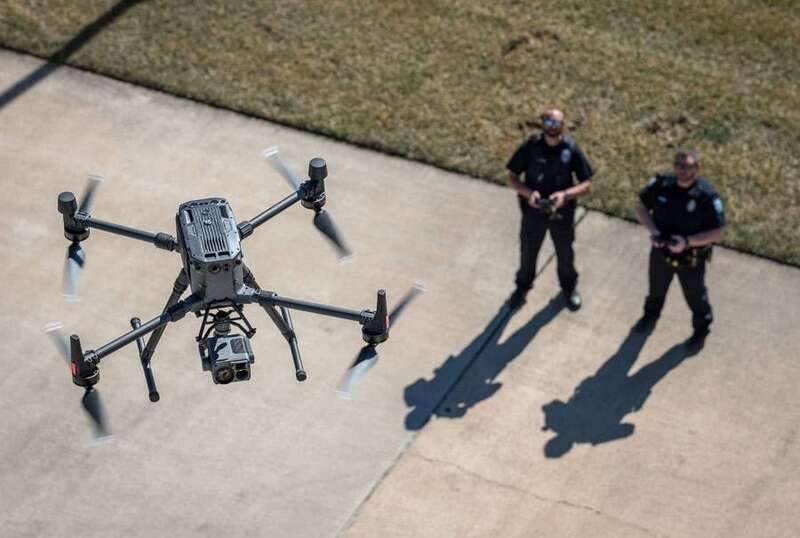
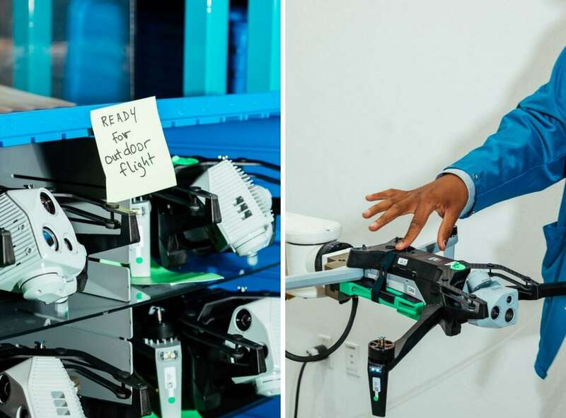

【 刘程辉】质量好、技术高、交货快、价格还实惠……在中国无人机产品的种种优势面前，美政客的封杀令正引发越来越多的不满。
“美国尚未准备好摆脱对中国无人机的依赖。”《华尔街日报》8月7日发表的一篇报道指出，美国政客封禁中国制造无人机的企图，正遭到国内山地救援队、警察局和农户等多方抵制。大批中国无人机的忠实用户纷纷发起抗议，他们致电民选官员、撰写专栏文章并签署联名信，反对封杀令，因为美国制造的无人机无论技术还是能力，都远远比不上中国产品。
《华尔街日报》报道讲述了美国韦伯县治安官搜救队空中行动负责人凯尔·诺德福斯（Kyle Nordfors）的故事。几周前，诺德福斯曾使用中国大疆无人机成功完成了一次山地救援，可当他后来试图用一架硅谷公司制造的无人机重演这次行动时，却失败了——这架飞机根本飞不到山顶，最终因失去无线电信号而返回。

在一次山地救援行动中，美国犹他州瓦萨奇山脉韦伯县治安官搜救队使用大疆无人机开展救援。华尔街日报
“这架美国无人机甚至都飞不到山顶展开搜索。”诺德福斯说，他在山上测试了数十架无人机，大疆的产品是最好用的。
他如今担心，如果美国政府禁止使用大疆无人机，将严重阻碍搜寻失踪登山者和徒步人员的工作。
目前美国国会正在推动一项封禁中国无人机在美销售的法案，该法案最早可能在今年获得通过。报道认为，在反对封杀令的斗争中，像诺德福斯这样的人发挥着至关重要的作用。从山地救援队到警察局和农户，大批中国无人机的忠实用户纷纷发起抗议，他们致电民选官员、撰写专栏文章并签署联名信，对大疆表示支持。
堪萨斯州劳伦斯警察局无人机小组协调员德鲁·芬内利（Drew Fennelly）表示，他们已使用20架大疆无人机和其他中国品牌无人机寻找失踪儿童，并抓捕试图逃跑的暴徒。
“我们只是希望以最合理的价格获得保障公民安全的最佳技术。美国无人机的技术尚未赶上中国无人机。”芬内利抱怨，“理想情况下，我们会愿意支持美国制造的无人机。但现在让我们做到这一点真的很难。”
有美国警官曾这样形容，中国无人机犹如一辆超豪华SUV，而美国无人机则是一辆售价更高的紧凑型轿车，“你宁愿选择哪一辆”？

资料图：美国执法人员操纵大疆无人机
担心大疆可能被禁的无人机用户表示，美国无人机通常飞得不够远，摄像头和无线电的质量也比较差，而且价格是大疆无人机的数倍。此外，美国无人机存在供应不足的问题，客户等待交货时间很长。无人机买家透露，他们有时要等将近五个月才能买到美国无人机，而大疆无人机立刻就能到手。
美国无人机制造商则称，他们已缩小与中国的技术差距，一旦有足够的需求和资金进行大规模生产，成本就会降下来。
近年来，虽然美国两党政客、军方官员和联邦监管机构屡屡给中国产品贴上所谓“国家安全风险”的标签，但大疆在美国商业、地方政府和业余爱好者无人机市场占据了70%至90%的巨大份额。纽约巴德学院2020年的一项数据显示，在美国公共安全机构使用的所有无人机中，大疆无人机的占比达到90%。
报道称，从房地产经纪人到电影制片人，从消防员到屋顶检查员，再到公用事业单位和执法部门，都极度依赖大疆无人机。根据联邦采购记录，美国特勤局还赶在限制措施实施前购买了20多架大疆无人机。
大疆警告称，禁令可能会导致美国损失数十亿美元，并影响数千个工作岗位。大疆在致美国国会的一封信中强调，“把最大的制造商赶出市场也会使美国无人机生态系统出现真空”。

美国硅谷无人机企业Skydio生产的小型无人机。该公司生产的无人机在俄乌战场差评不断。华尔街日报
美国众议院6月通过了一项《反制中国无人机法案》，它是美国2025年国防授权法案的一部分，目的是阻止大疆的新设备或软件获取美国联邦通信（FCC）认证，而且还可能导致现有FCC授权的撤销。如果该法案在参议院通过，并经美国总统签署正式生效，那么可能使这家中国企业在美国面临被全面禁售的风险。
但参议院版本的《2025财年国防授权法》中并未包括这一禁令条款，在闭门表决中以22票对3票通过后，该法案有待提交参议院全体审议，若获得通过，将与众议院版本协调差异。
美国政客对中国无人机的无端刁难其实已持续数年之久。
2017年，五角大楼以“数据安全隐患”为借口禁止美军使用大疆的无人机产品，对其开始长达一年的制裁。然而事实上，由于无法找到可替代产品，在这一年中，大疆在美国的市场份额不降反升。2020年，美国商务部又以“违反美国国家安全” 为由，宣布将包括大疆公司在内的59家中国实体列入所谓出口管制“实体清单”。
有美国共和党议员去年早些时候表示，在美国销售的无人机中，超过50%是大疆制造的，它们是公共安全机构使用的最受欢迎的无人机。五角大楼2021年发布的一份报告也承认，在经过调查分析后发现，大疆两款专门为政府机构制造的无人机中“不存在恶意代码或恶意意图”。
值得一提的是，《华尔街日报》今年4月曾发文披露，美企制造的小型无人机在俄乌战场上差评不断——故障多、丢信号、维修难，价格还贵……而在美国企业高管和前军方官员看来，这都要怪美政府近些年对中国无人机滥加的种种禁令，徒增了无人机的制造成本和难度。